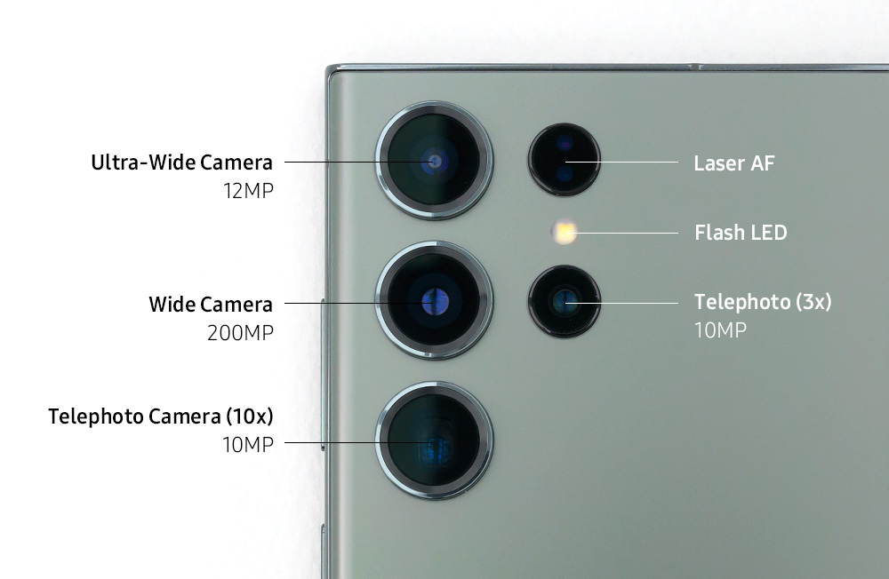

The Samsung Galaxy S23 Ultra was launched February 17, 2023 at a whopping price of $1,649 Canadian for the 256GB model, $1,890 for the 512GB model, and $2,200 for the 1TB model.
It combines sleek design with unmatched functionality. Featuring a massive battery, S Pen, and pro-level camera capabilities, it’s built for those who demand versatility and performance in every aspect of their smartphone experience.
One of the main features of the S23 is the camera which outperforms any other phone camera on the market.
| Lens | Description |
|---|---|
| 200MP Wide (Main) Lens | This is the primary camera, capable of capturing highly detailed and sharp images. It performs well in various lighting conditions and delivers vibrant, high-resolution photos. |
| 12MP Ultra-Wide Lens | With a 120-degree field of view, this lens is great for wide-angle shots, such as landscapes or group photos. |
| 10MP Telephoto Lens (3x optical zoom) | This lens is designed for zooming in on subjects at a medium distance, like portraits or scenes where you want to capture details without losing quality. |
| 10MP Periscope Telephoto Lens (10x optical zoom) | This lens offers powerful zoom capabilities, with 10x optical zoom and 100x Space Zoom, allowing you to capture detailed shots from a distance. |

| Features | Specifications |
|---|---|
| Display | 6.8-inch Dynamic AMOLED 2X, 3088 x 1440 resolution, 120Hz refresh rate |
| Processor | Qualcomm Snapdragon 8 Gen 2 |
| RAM | 8GB or 12GB |
| Storage | 256GB, 512GB, or 1TB (non-expandable) |
| Rear Cameras | 200MP (wide) + 12MP (ultrawide) + 10MP (telephoto 3x) + 10MP (telephoto 10x) |
| Front Camera | 12MP |
| Battery | 5000mAh, 45W wired fast charging, 15W wireless charging |
| Operating System | Android 13 with One UI 5.1 |
| Connectivity | 5G, Wi-Fi 6E, Bluetooth 5.3 |
| Dimensions | 163.4 x 78.1 x 8.9 mm |
| Weight | 234g |
| Colors | Phantom Black, Green, Cream, Lavender (varies by region) |